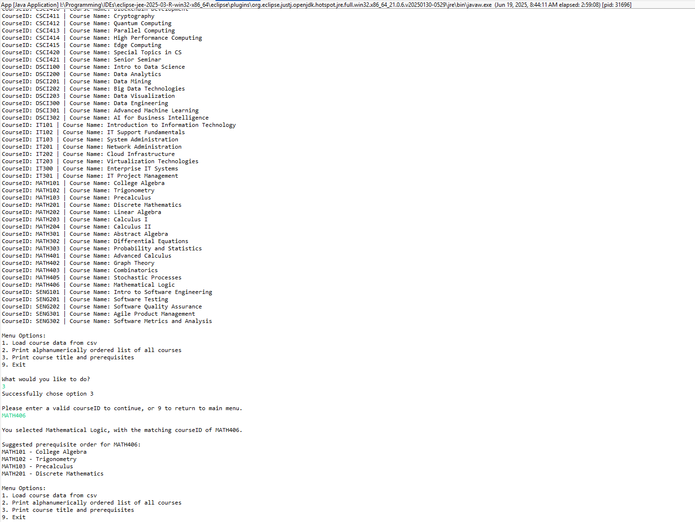

Professional Self-Assessment
As an almost graduate of Southern New Hampshire University’s Computer Science program, this ePortfolio is meant to serve as a showcase for my educational growth and developed skills. Throughout the last couple of years, I have evolved from a beginner in code structure and logic to a confident software developer capable of engineering scalable solutions and critically assessing algorithmic efficiency. This ePortfolio highlights areas I have developed my skills, such as software design/engineering, algorithms/data structures, and backend databases. All together, they help to demonstrate my ability to deliver professional, quality software.
My academic journey put an emphasis on hands-on learning and practical application. I was able to communicate design decisions to both technical and non-technical audiences and apply computer science theories and algorithms to real-world systems. I believe that my focus on algorithm optimization, secure coding practices, and cross-platform development has helped to prepare me for the challenges of today’s tech industry. From the enhancements made through my capstone project, I have demonstrated my ability to write efficient, secure, and maintainable code.
Code Review Video
Artifact: Course Prerequisite Manager
This project was originally implemented in C++. I refactored and enhanced it into Java to complete the capstone requirements, as well as to support non-volatile storage of data. It demonstrates object-oriented design principles, algorithm optimization (via DFS traversal), and database integration using SQLite and JDBC.
Artifact Narrative for each Enhancement
Enhanced Java Version
- App.java (Main Entry)
- Course.java (Data Class)
- CourseGraph.java (Graph Logic)
- CourseDatabaseManager.java (Database Handler)
- CoursesTable.java (Courses SQL Table)
- PrerequisitesTable.java (Prerequisite SQL Table)